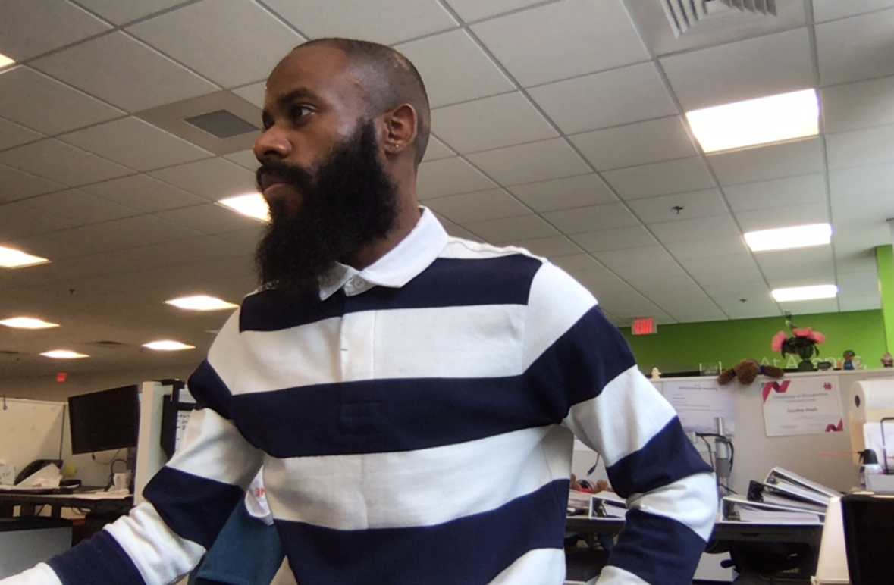

Hi there!
My name is
Chris Etienne. I am a Researcher in the
Discovery Research Group at
Agenus, a clinical-stage immuno-oncology company in Lexington, MA.
My main research focuses are in Functional Genomics and Novel Target Discovery -- I use a combination of novel Immunology techniques and Molecular Biology tools to conduct loss of function genomics screens in order to identify novel immune regulators relevant to cancer immune evasion. I also develop robust bioinformatics pipelines to analyze Next-Generation Sequencing data and clinical data to identify resistance mechanisms to immune checkpoint modulating (CPM) therapeutics, especially, PD1 and CTLA4.
I take a broad view of Immuno-Modulatory Drug Discovery and Targeted Therapy: I believe that combination treatments involving conventional small molecules and biologics (e.g. antibodies and recombinant proteins), as well as more novel therapies such as Adoptive Cell Therapy (CAR T, TCR, TIL, NK cells) together will provide curative treatments to patients.
Most of my work these days involves rethinking how to better understand the Tumor Immune Micro-Environment and its effects on the immune system, how to identify genetic markers underlying diseases across different cancer indications, applying and creating better computational tools for data analysis.
I am lover of open-source software/code and always looking for something new and fun to learn.